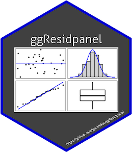

class: center, middle, inverse, title-slide .title[ # .right[] ggResidpanel ] .subtitle[ ## Easy Creation of Panels of Diagnostics Plots ] .author[ ### Katherine Goode ] .date[ ### October 4, 2019 ] --- <style> .remark-slide-content { background-color: #FFFFFF; border-top: 80px solid #404040; font-size: 24px; font-weight: 300; line-height: 1.5; padding: 1em 2em 1em 2em } .inverse { background-color: #404040; text-shadow: none; } .title-slide { background-color: #FFFFFF; border-top: 80px solid #FFFFFF; } .remark-slide-number { position: inherit; } .remark-slide-number .progress-bar-container { position: absolute; bottom: 0; height: 4px; display: block; left: 0; right: 0; } .remark-slide-number .progress-bar { height: 100%; background-color: #0D06C0; } </style> # Overview 1. Introduction: background and motivation 2. ggResidpanel Functionality 3. Current Development 4. Resources <br> For following along... ```r # Installs package install.packages("ggResidpanel") # Loads package library(ggResidpanel) ``` --- # Example Data: Trees `trees` data available in base R "This data set provides measurements of the diameter, height and volume of timber in 31 felled black cherry trees." - R documentation ```r str(trees) ``` ``` ## 'data.frame': 31 obs. of 3 variables: ## $ Girth : num 8.3 8.6 8.8 10.5 10.7 10.8 11 11 11.1 11.2 ... ## $ Height: num 70 65 63 72 81 83 66 75 80 75 ... ## $ Volume: num 10.3 10.3 10.2 16.4 18.8 19.7 15.6 18.2 22.6 19.9 ... ``` *Linear Model* ```r # Example linear model tree_model <- lm(Volume ~ Height + Girth, data = trees) ``` --- # Example Data: Penguins `penguins` data available in ggResidpanel Data from a study on how the heart rate of the emperor penguins relates to the depth and duration during a dive. Multiple observations taken from 9 penguins. ```r str(ggResidpanel::penguins) ``` ``` ## 'data.frame': 125 obs. of 4 variables: ## $ heartrate: num 88.8 103.4 97.4 85.3 60.6 ... ## $ depth : num 5 9 22 25.5 30.5 32.5 38 32 6 10.5 ... ## $ duration : num 1.05 1.18 1.92 3.47 7.08 ... ## $ bird : Factor w/ 9 levels "1","2","3","4",..: 1 1 1 1 1 1 1 1 1 1 ... ``` *Mixed effects model* ```r penguin_model <- lme4::lmer(heartrate ~ depth + duration + (1|bird), data = penguins) ``` --- class: inverse, center, middle # Introduction --- # Example of Model Assumptions ### Linear Model For `\(i=1,...,n\)`: `$$y_i=\beta_0+\beta_1x_{1,i}+\cdots+\beta_px_{p,i}+\epsilon_i$$` where `$$\epsilon_i\overset{iid}{\sim}N(0,\sigma^2)$$` ### Assumptions (in words) - independence of residuals - linearity - constant variance of residuals - normality of residuals --- # Examples of Diagnostic Plots .center[ <img src="slides_files/figure-html/unnamed-chunk-6-1.png" style="display: block; margin: auto;" /> ] --- # Examples of Diagnostic Plots .center[ <img src="slides_files/figure-html/unnamed-chunk-7-1.png" style="display: block; margin: auto;" /> ] --- # What is ggResidpanel? R package for the easy creation of panels of diagnostics plots using ggplot2 (joint work with Katie Rey) ```r resid_panel(tree_model) ``` <img src="slides_files/figure-html/unnamed-chunk-8-1.png" style="display: block; margin: auto;" /> --- # Motivation - Katie Rey and I worked as stats consultants - Encourage checking of model assumptions - Annoyed by the base R plotting option `> plot(model)` `Hit <Return> to see next plot:` `Hit <Return> to see next plot:` . . . - Wanted to develop a tool for easy creation of residual plots using ggplot --- # Other Tools: plot.lm ```r par(mfrow = c(2, 2)) # specifies the layout plot(tree_model) # plots 'lm' default diagnostic plots ``` <img src="slides_files/figure-html/unnamed-chunk-9-1.png" style="display: block; margin: auto;" /> --- # Other Tools: plot.merMod ```r plot(penguin_model) ``` <img src="slides_files/figure-html/unnamed-chunk-10-1.png" style="display: block; margin: auto;" /> --- # Other Tools: ggfortify ```r library(ggfortify) autoplot(tree_model) ``` <img src="slides_files/figure-html/unnamed-chunk-11-1.png" style="display: block; margin: auto;" /> --- # Other Tools: ggfortify ```r autoplot(penguin_model) ``` ``` ## Error in `autoplot()`: ## ! Objects of class <lmerMod> are not supported by autoplot. ## ℹ have you loaded the required package? ``` --- # Other Tools: broom + ggplot2 ```r library(broom) # extracts model info in a dataframe tree_model_values <- augment(tree_model) head(tree_model_values) ``` ``` ## # A tibble: 6 × 9 ## Volume Height Girth .fitted .resid .hat .sigma .cooksd .std.resid ## <dbl> <dbl> <dbl> <dbl> <dbl> <dbl> <dbl> <dbl> <dbl> ## 1 10.3 70 8.3 4.84 5.46 0.116 3.79 0.0978 1.50 ## 2 10.3 65 8.6 4.55 5.75 0.147 3.77 0.148 1.60 ## 3 10.2 63 8.8 4.82 5.38 0.177 3.78 0.167 1.53 ## 4 16.4 72 10.5 15.9 0.526 0.0592 3.95 0.000409 0.140 ## 5 18.8 81 10.7 19.9 -1.07 0.121 3.95 0.00394 -0.294 ## 6 19.7 83 10.8 21.0 -1.32 0.156 3.94 0.00840 -0.370 ``` --- # Other Tools: broom + ggplot2 ```r ggplot(tree_model_values, aes(x = .fitted, y = .resid)) + geom_point() ``` <img src="slides_files/figure-html/unnamed-chunk-14-1.png" style="display: block; margin: auto;" /> --- # Other Tools: SAS residual panels ### Residual Panels from SAS Procedures <img src="./figures/sas1.png" width="400"> <img src="./figures/sas2.png" width="400"> --- # Goals for ggResidpanel - simple creation of panels of diagnostic plots - ggplot2 framework - functionality for linear and mixed models - more plot options and choice of plots - additional features: - interactive - comparison of models - more residual choices --- class: inverse, center, middle # ggResidpanel Functionality --- # Functions Available **Models of type**: “lm”, “glm”, “lme”, “lmer”, “glmer”, and “lmerTest” - `resid_panel`: panel of diagnostic plots - `resid_interact`: interactive panel of diagnostic plots - `resid_xpanel`: panel of diagnostic plots of the predictor variables - `resid_compare`: panel of diagnostic plots from multiple models **Any model type** - `resid_auxpanel`: mimics (to a certain extent) `resid_panel` for any model type --- # resid_panel ```r resid_panel(penguin_model) ``` <img src="slides_files/figure-html/unnamed-chunk-15-1.png" style="display: block; margin: auto;" /> --- # resid_panel: plot options | Plot | Description | | :--------- | :-------------------- | | boxplot | boxplot of residuals | | cookd | Cook's D values versus observation numbers | | hist | histogram of residuals | | index | residuals versus observation numbers | | ls | location scale plot of the residuals | | qq | normal quantile plot of residuals | | lev | standardized residuals versus leverage values | | resid | residuals versus predicted values | | yvp | observed response values versus predicted values | *Note: cookd, ls, lev only available for "lm" and "glm" models* --- # resid_panel: plot options **Additional Options** - `bins` = number of bins for the histogram - `qqbands` = include 95% confidence bands line on qq plot? - `qqline` = include 1-1 line on qq plot? - `smoother` = include a smoother on index, ls, lev, and resid plots? --- # resid_panel: individual plot ```r resid_panel(penguin_model, plots = "yvp") ``` <img src="slides_files/figure-html/unnamed-chunk-16-1.png" style="display: block; margin: auto;" /> --- # resid_panel: vector of plots ```r resid_panel(penguin_model, plots = c("resid", "qq", "yvp"), nrow = 1) ``` <img src="slides_files/figure-html/unnamed-chunk-17-1.png" style="display: block; margin: auto;" /> --- # resid_panel: prespecified panels ```r resid_panel(penguin_model, plots = "SAS") ``` <img src="slides_files/figure-html/unnamed-chunk-18-1.png" style="display: block; margin: auto;" /> --- # resid_panel: prespecified panels ```r resid_panel(penguin_model, plots = "all") ``` <img src="slides_files/figure-html/unnamed-chunk-19-1.png" style="display: block; margin: auto;" /> --- # resid_panel: prespecified panels ```r resid_panel(tree_model, plots = "all", smoother = TRUE, qqbands = TRUE) ``` <img src="slides_files/figure-html/unnamed-chunk-20-1.png" style="display: block; margin: auto;" /> --- # resid_panel: prespecified panels ```r resid_panel(tree_model, plots = "R", smoother = TRUE) # for lm and glm models only ``` <img src="slides_files/figure-html/unnamed-chunk-21-1.png" style="display: block; margin: auto;" /> --- # resid_panel: residual types .pull-left[ **“lm” model:** - pearson - response* - standardized **“glm” model:** - pearson - deviance* - response - stand.deviance - stand.pearson ] .pull-right[ **“lmer”, “lmerTest”, and “lme” models:** - pearson* - response **“glmer” model:** - pearson - deviance* - response *Note: plots of ls and lev only accept standardized residuals* ] *** Denotes default residual type --- # resid_panel: residual types ```r resid_panel(tree_model, type = "standardized") ``` <img src="slides_files/figure-html/unnamed-chunk-22-1.png" style="display: block; margin: auto;" /> --- # resid_panel: residual types ```r resid_panel(penguin_model, type = "response") ``` <img src="slides_files/figure-html/unnamed-chunk-23-1.png" style="display: block; margin: auto;" /> --- # resid_panel: panel formatting **Format Options** - `axis.text.size` = adjust axis text size - `title.text.size` = adjust title text size - `nrow` = number of rows in the panel - `scale` = adjusts the size of the graphics - `theme` = “bw”, “classic”, and “grey” (or “gray”) - `title.opt` = whether to include a title --- # resid_panel: formatting options .pull-left[ ```r formatted <- resid_panel( penguin_model, plots = c("yvp", "index"), axis.text.size = 24, title.text.size = 30, nrow = 2, scale = 0.9, theme = "grey" ) ``` ] .pull-right[ ```r formatted ``` <img src="slides_files/figure-html/unnamed-chunk-25-1.png" style="display: block; margin: auto;" /> ] --- # resid_interact ```r resid_interact(penguin_model) ``` <div id="htmlwidget-a37a8e2fe9685807ff70" style="width:100%;height:105%;" class="widgetframe html-widget "></div> <script type="application/json" data-for="htmlwidget-a37a8e2fe9685807ff70">{"x":{"url":"slides_files/figure-html//widgets/widget_unnamed-chunk-27.html","options":{"xdomain":"*","allowfullscreen":false,"lazyload":false}},"evals":[],"jsHooks":[]}</script> --- # resid_interact: options Same options as `resid_panel` <small> (except `qqbands` is not available) </small> ```r resid_interact(penguin_model, plots = c("resid", "yvp"), theme = "classic", smoother = TRUE) ``` <div id="htmlwidget-b8c5ab2b3011e9de1e20" style="width:100%;height:504px;" class="widgetframe html-widget "></div> <script type="application/json" data-for="htmlwidget-b8c5ab2b3011e9de1e20">{"x":{"url":"slides_files/figure-html//widgets/widget_unnamed-chunk-29.html","options":{"xdomain":"*","allowfullscreen":false,"lazyload":false}},"evals":[],"jsHooks":[]}</script> --- # resid_xpanel ```r resid_xpanel(penguin_model) ``` <img src="slides_files/figure-html/unnamed-chunk-30-1.png" style="display: block; margin: auto;" /> --- # resid_xpanel: options - `yvar`: "residual" (default) or "response" - `smoother`: indicates whether to add a smoother or not - `type`: residual types (same as `resid_panel`) - format options: same as `resid_panel` ```r resid_xpanel(penguin_model, yvar = "response", smoother = TRUE, nrow = 1) ``` <img src="slides_files/figure-html/unnamed-chunk-31-1.png" style="display: block; margin: auto;" /> --- # resid_compare .pull-left[ ```r # Fit a new model to the # penguin data penguin_model_log2 <- lme4::lmer( log(heartrate) ~ depth + duration + I(duration^2) + (1|bird), data = penguins) # Compare the residuals from # the two penguin models compare_panel <- resid_compare( list(penguin_model, penguin_model_log2)) ``` ] .pull-right[ ```r compare_panel ``` <img src="slides_files/figure-html/unnamed-chunk-33-1.png" style="display: block; margin: auto;" /> ] --- # resid_compare: options Same options as resid_panel <small> (expect no `nrow`) </small> ```r resid_compare(models = list(penguin_model, penguin_model_log2), plots = c("resid", "yvp"), smoother = TRUE, theme = "gray") ``` <img src="slides_files/figure-html/unnamed-chunk-34-1.png" style="display: block; margin: auto;" /> --- # resid_auxpanel .pull-left[ ```r # Fit a regression tree penguin_tree <- rpart::rpart( heartrate ~ depth + duration, data = penguins) # Obtain the predicted values tree_pred <- predict(penguin_tree) # Obtain the residuals tree_resid <- penguins$heartrate - tree_pred # Create default panel tree_panel <- resid_auxpanel( residuals = tree_resid, predicted = tree_pred) ``` ] .pull-right[ ```r tree_panel ``` <img src="slides_files/figure-html/unnamed-chunk-36-1.png" style="display: block; margin: auto;" /> ] --- # resid_auxpanel: options Same as `resid_panel` (except for available plots) **Plots Options**: boxplot, hist, index, qq, resid **Prespecified Panels**: all, default, SAS ```r resid_auxpanel(residuals = tree_resid, predicted = tree_pred, plots = c("resid", "index"), smoother = TRUE) ``` <img src="slides_files/figure-html/unnamed-chunk-37-1.png" style="display: block; margin: auto;" /> --- class: inverse, center, middle # Current Development --- # In progress... - Additional residual types - such as standardized residuals for mixed models - Interactions in resid_xpanel - Option to color by a variable .center[<img src="./figures/withcolor.png" width="1000"> ] --- class: inverse, center, middle # Resources --- # Helpful Links - [Website](https://goodekat.github.io/ggResidpanel/) - [Introduction Vignette](https://cran.r-project.org/web/packages/ggResidpanel/vignettes/introduction.html) - [Tutorial and User Manual](https://goodekat.github.io/ggResidpanel-tutorial/tutorial.html) - [GitHub Repository](https://github.com/goodekat/ggResidpanel) .center[<img src="./figures/hedgehog.jpeg" height="400">]